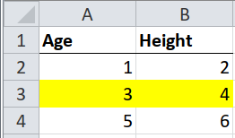
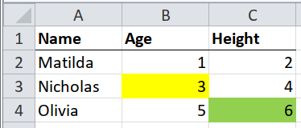
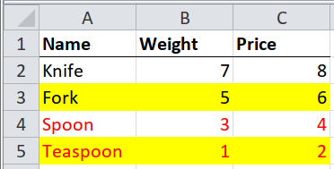
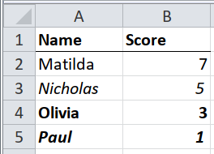

SpreadSheet Munging Strategies in Python - Meaningful Formats#
Meaningful Formats#
updated : April 15, 2022
This is part of a series of blog posts about extracting data from spreadsheets using Python. It is based on the book written by Duncan Garmonsway, which was written primarily for R users. LInks to the other posts are on the homepage.
This is an excerpt from Duncan’s book regarding meaningful formats :
Sometimes whole rows in a table are highlighted by formatting them with, say, a bright yellow fill. The highlighting could mean “this observation should be ignored”, or “this product is no longer available”. Different colours could mean different levels of a hierarchy, e.g. green for “pass” and red for “fail”.
The examples below highlight various ways of dealing with meaningfully formatted spreadsheets. Let’s dive in.
Case 1 : Meaningfully Formatted Rows#

The goal is to capture the color as part of our final output. We’ll make use of the xlsx_cells function from pyjanitor - under the hood, it uses openpyxl:
# pip install git+https://github.com/pyjanitor-devs/pyjanitor.git
import pandas as pd
import janitor
import numpy as np
from janitor import xlsx_cells
filename = "Data_files/worked-examples.xlsx"
frame = xlsx_cells(filename, sheetnames = 'highlights', fill=True)
frame
| value | internal_value | coordinate | row | column | data_type | is_date | number_format | fill | |
|---|---|---|---|---|---|---|---|---|---|
| 0 | Age | Age | A1 | 1 | 1 | s | False | General | {'patternType': None, 'fgColor': {'rgb': '0000... |
| 1 | Height | Height | B1 | 1 | 2 | s | False | General | {'patternType': None, 'fgColor': {'rgb': '0000... |
| 2 | 1 | 1 | A2 | 2 | 1 | n | False | General | {'patternType': None, 'fgColor': {'rgb': '0000... |
| 3 | 2 | 2 | B2 | 2 | 2 | n | False | General | {'patternType': None, 'fgColor': {'rgb': '0000... |
| 4 | 3 | 3 | A3 | 3 | 1 | n | False | General | {'patternType': 'solid', 'fgColor': {'rgb': 'F... |
| 5 | 4 | 4 | B3 | 3 | 2 | n | False | General | {'patternType': 'solid', 'fgColor': {'rgb': 'F... |
| 6 | 5 | 5 | A4 | 4 | 1 | n | False | General | {'patternType': None, 'fgColor': {'rgb': '0000... |
| 7 | 6 | 6 | B4 | 4 | 2 | n | False | General | {'patternType': None, 'fgColor': {'rgb': '0000... |
You can view a single row in the fill column:
frame.fill[0]
{'patternType': None,
'fgColor': {'rgb': '00000000', 'type': 'rgb', 'tint': 0.0},
'bgColor': {'rgb': '00000000', 'type': 'rgb', 'tint': 0.0}}
The colour information can be accessed using panda’s string methods:
frame['fill_colour'] = frame.fill.str.get('fgColor').str.get('rgb')
frame['fill_colour']
0 00000000
1 00000000
2 00000000
3 00000000
4 FFFFFF00
5 FFFFFF00
6 00000000
7 00000000
Name: fill_colour, dtype: object
headers = frame.loc[frame.data_type == 's', ['value', 'column']].set_index('column')['value']
numbers = frame.loc[frame.data_type == 'n', ['value', 'row', 'column', 'fill_colour']]
# remove duplicate rows, since the fill colour is the same per row,
fill_colour = numbers.loc[:, ['row', 'fill_colour']].drop_duplicates(subset=['row'])
del numbers['fill_colour']
headers
column
1 Age
2 Height
Name: value, dtype: object
numbers
| value | row | column | |
|---|---|---|---|
| 2 | 1 | 2 | 1 |
| 3 | 2 | 2 | 2 |
| 4 | 3 | 3 | 1 |
| 5 | 4 | 3 | 2 |
| 6 | 5 | 4 | 1 |
| 7 | 6 | 4 | 2 |
fill_colour
| row | fill_colour | |
|---|---|---|
| 2 | 2 | 00000000 |
| 4 | 3 | FFFFFF00 |
| 6 | 4 | 00000000 |
Some further reshaping to combine the headers, numbers and colour:
(numbers
.pivot(index='row', columns='column')
.droplevel(axis = 1, level = 0)
.rename(columns=headers)
.merge(fill_colour, on = 'row')
.drop(columns='row')
)
| Age | Height | fill_colour | |
|---|---|---|---|
| 0 | 1 | 2 | 00000000 |
| 1 | 3 | 4 | FFFFFF00 |
| 2 | 5 | 6 | 00000000 |
Case 2 : Meaningfully Formatted Cells#

In the pic above, the table has different colors for different cells. xlsx_cells comes in handy again, and the focus here, just as in Case 1, is the cell’s fill attribute.
frame = xlsx_cells(filename, sheetnames = 'annotations', fill=True)
frame['fill_colour'] = frame.fill.str.get('fgColor').str.get('rgb')
frame
| value | internal_value | coordinate | row | column | data_type | is_date | number_format | fill | fill_colour | |
|---|---|---|---|---|---|---|---|---|---|---|
| 0 | Name | Name | A1 | 1 | 1 | s | False | General | {'patternType': None, 'fgColor': {'rgb': '0000... | 00000000 |
| 1 | Age | Age | B1 | 1 | 2 | s | False | General | {'patternType': None, 'fgColor': {'rgb': '0000... | 00000000 |
| 2 | Height | Height | C1 | 1 | 3 | s | False | General | {'patternType': None, 'fgColor': {'rgb': '0000... | 00000000 |
| 3 | Matilda | Matilda | A2 | 2 | 1 | s | False | General | {'patternType': None, 'fgColor': {'rgb': '0000... | 00000000 |
| 4 | 1 | 1 | B2 | 2 | 2 | n | False | General | {'patternType': None, 'fgColor': {'rgb': '0000... | 00000000 |
| 5 | 2 | 2 | C2 | 2 | 3 | n | False | General | {'patternType': None, 'fgColor': {'rgb': '0000... | 00000000 |
| 6 | Nicholas | Nicholas | A3 | 3 | 1 | s | False | General | {'patternType': None, 'fgColor': {'rgb': '0000... | 00000000 |
| 7 | 3 | 3 | B3 | 3 | 2 | n | False | General | {'patternType': 'solid', 'fgColor': {'rgb': 'F... | FFFFFF00 |
| 8 | 4 | 4 | C3 | 3 | 3 | n | False | General | {'patternType': None, 'fgColor': {'rgb': '0000... | 00000000 |
| 9 | Olivia | Olivia | A4 | 4 | 1 | s | False | General | {'patternType': None, 'fgColor': {'rgb': '0000... | 00000000 |
| 10 | 5 | 5 | B4 | 4 | 2 | n | False | General | {'patternType': None, 'fgColor': {'rgb': '0000... | 00000000 |
| 11 | 6 | 6 | C4 | 4 | 3 | n | False | General | {'patternType': 'solid', 'fgColor': {'rgb': 'F... | FF92D050 |
headers = frame.loc[frame.row.eq(1), ['value', 'row', 'column']].rename(columns={'value':'measure'})
students = frame.loc[frame.column.eq(1) & frame.row.gt(1), ['value', 'row', 'column']].rename(columns = {'value':'name'})
numbers = frame.loc[frame.data_type == 'n', ['value', 'row', 'column', 'fill_colour']]
---------------------------------------------------------------------------
TypeError Traceback (most recent call last)
Cell In[11], line 2
1 headers = frame.loc[frame.row.eq(1), ['value', 'row', 'column']].rename(columns={'value':'measure'})
----> 2 students = frame.loc[frame.column.eq(1) & frame.row.gt(1), ['value', 'row', 'column']].rename(columns = {'value':'name'})
3 numbers = frame.loc[frame.data_type == 'n', ['value', 'row', 'column', 'fill_colour']]
File ~/mambaforge/envs/blogger/lib/python3.10/site-packages/pandas/core/series.py:6300, in Series.gt(self, other, level, fill_value, axis)
6298 @Appender(ops.make_flex_doc("gt", "series"))
6299 def gt(self, other, level=None, fill_value=None, axis: Axis = 0) -> Series:
-> 6300 return self._flex_method(
6301 other, operator.gt, level=level, fill_value=fill_value, axis=axis
6302 )
File ~/mambaforge/envs/blogger/lib/python3.10/site-packages/pandas/core/series.py:6260, in Series._flex_method(self, other, op, level, fill_value, axis)
6257 return op(self, fill_value)
6258 self = self.fillna(fill_value)
-> 6260 return op(self, other)
File ~/mambaforge/envs/blogger/lib/python3.10/site-packages/pandas/core/ops/common.py:76, in _unpack_zerodim_and_defer.<locals>.new_method(self, other)
72 return NotImplemented
74 other = item_from_zerodim(other)
---> 76 return method(self, other)
File ~/mambaforge/envs/blogger/lib/python3.10/site-packages/pandas/core/arraylike.py:56, in OpsMixin.__gt__(self, other)
54 @unpack_zerodim_and_defer("__gt__")
55 def __gt__(self, other):
---> 56 return self._cmp_method(other, operator.gt)
File ~/mambaforge/envs/blogger/lib/python3.10/site-packages/pandas/core/series.py:6119, in Series._cmp_method(self, other, op)
6116 lvalues = self._values
6117 rvalues = extract_array(other, extract_numpy=True, extract_range=True)
-> 6119 res_values = ops.comparison_op(lvalues, rvalues, op)
6121 return self._construct_result(res_values, name=res_name)
File ~/mambaforge/envs/blogger/lib/python3.10/site-packages/pandas/core/ops/array_ops.py:344, in comparison_op(left, right, op)
341 return invalid_comparison(lvalues, rvalues, op)
343 elif lvalues.dtype == object or isinstance(rvalues, str):
--> 344 res_values = comp_method_OBJECT_ARRAY(op, lvalues, rvalues)
346 else:
347 res_values = _na_arithmetic_op(lvalues, rvalues, op, is_cmp=True)
File ~/mambaforge/envs/blogger/lib/python3.10/site-packages/pandas/core/ops/array_ops.py:129, in comp_method_OBJECT_ARRAY(op, x, y)
127 result = libops.vec_compare(x.ravel(), y.ravel(), op)
128 else:
--> 129 result = libops.scalar_compare(x.ravel(), y, op)
130 return result.reshape(x.shape)
File ops.pyx:107, in pandas._libs.ops.scalar_compare()
TypeError: '>' not supported between instances of 'str' and 'int'
headers
| measure | row | column | |
|---|---|---|---|
| 0 | Name | 1 | 1 |
| 1 | Age | 1 | 2 |
| 2 | Height | 1 | 3 |
numbers
| value | row | column | fill_colour | |
|---|---|---|---|---|
| 4 | 1 | 2 | 2 | 00000000 |
| 5 | 2 | 2 | 3 | 00000000 |
| 7 | 3 | 3 | 2 | FFFFFF00 |
| 8 | 4 | 3 | 3 | 00000000 |
| 10 | 5 | 4 | 2 | 00000000 |
| 11 | 6 | 4 | 3 | FF92D050 |
students
| name | row | column | |
|---|---|---|---|
| 3 | Matilda | 2 | 1 |
| 6 | Nicholas | 3 | 1 |
| 9 | Olivia | 4 | 1 |
We can combine the dataframes into one, based on positions:
(students
.drop(columns='column')
.merge(numbers, on='row')
.merge(headers.drop(columns='row'), on = 'column')
.loc[:, ['name', 'measure', 'value', 'fill_colour']]
)
| name | measure | value | fill_colour | |
|---|---|---|---|---|
| 0 | Matilda | Age | 1 | 00000000 |
| 1 | Nicholas | Age | 3 | FFFFFF00 |
| 2 | Olivia | Age | 5 | 00000000 |
| 3 | Matilda | Height | 2 | 00000000 |
| 4 | Nicholas | Height | 4 | 00000000 |
| 5 | Olivia | Height | 6 | FF92D050 |
Case 3 : Layered Meaningful Formatting#

In this case, we have formats for fill and font.
The format applies to the entire row.
frame = xlsx_cells(filename, sheetnames = 'combined-highlights', fill=True, font = True)
frame['fill_colour'] = frame.fill.str.get('fgColor').str.get('rgb')
frame['font_colour'] = frame.font.str.get('color').str.get('rgb')
frame
| value | internal_value | coordinate | row | column | data_type | is_date | number_format | fill | font | fill_colour | font_colour | |
|---|---|---|---|---|---|---|---|---|---|---|---|---|
| 0 | Name | Name | A1 | 1 | 1 | s | False | General | {'patternType': None, 'fgColor': {'rgb': '0000... | {'name': 'Calibri', 'family': 2.0, 'sz': 11.0,... | 00000000 | FF000000 |
| 1 | Weight | Weight | B1 | 1 | 2 | s | False | General | {'patternType': None, 'fgColor': {'rgb': '0000... | {'name': 'Calibri', 'family': 2.0, 'sz': 11.0,... | 00000000 | FF000000 |
| 2 | Price | Price | C1 | 1 | 3 | s | False | General | {'patternType': None, 'fgColor': {'rgb': '0000... | {'name': 'Calibri', 'family': 2.0, 'sz': 11.0,... | 00000000 | FF000000 |
| 3 | Knife | Knife | A2 | 2 | 1 | s | False | General | {'patternType': None, 'fgColor': {'rgb': '0000... | {'name': 'Calibri', 'family': 2.0, 'sz': 11.0,... | 00000000 | FF000000 |
| 4 | 7 | 7 | B2 | 2 | 2 | n | False | General | {'patternType': None, 'fgColor': {'rgb': '0000... | {'name': 'Calibri', 'family': 2.0, 'sz': 11.0,... | 00000000 | FF000000 |
| 5 | 8 | 8 | C2 | 2 | 3 | n | False | General | {'patternType': None, 'fgColor': {'rgb': '0000... | {'name': 'Calibri', 'family': 2.0, 'sz': 11.0,... | 00000000 | FF000000 |
| 6 | Fork | Fork | A3 | 3 | 1 | s | False | General | {'patternType': 'solid', 'fgColor': {'rgb': 'F... | {'name': 'Calibri', 'family': 2.0, 'sz': 11.0,... | FFFFFF00 | FF000000 |
| 7 | 5 | 5 | B3 | 3 | 2 | n | False | General | {'patternType': 'solid', 'fgColor': {'rgb': 'F... | {'name': 'Calibri', 'family': 2.0, 'sz': 11.0,... | FFFFFF00 | None |
| 8 | 6 | 6 | C3 | 3 | 3 | n | False | General | {'patternType': 'solid', 'fgColor': {'rgb': 'F... | {'name': 'Calibri', 'family': 2.0, 'sz': 11.0,... | FFFFFF00 | None |
| 9 | Spoon | Spoon | A4 | 4 | 1 | s | False | General | {'patternType': None, 'fgColor': {'rgb': '0000... | {'name': 'Calibri', 'family': 2.0, 'sz': 11.0,... | 00000000 | FFFF0000 |
| 10 | 3 | 3 | B4 | 4 | 2 | n | False | General | {'patternType': None, 'fgColor': {'rgb': '0000... | {'name': 'Calibri', 'family': 2.0, 'sz': 11.0,... | 00000000 | FFFF0000 |
| 11 | 4 | 4 | C4 | 4 | 3 | n | False | General | {'patternType': None, 'fgColor': {'rgb': '0000... | {'name': 'Calibri', 'family': 2.0, 'sz': 11.0,... | 00000000 | FFFF0000 |
| 12 | Teaspoon | Teaspoon | A5 | 5 | 1 | s | False | General | {'patternType': 'solid', 'fgColor': {'rgb': 'F... | {'name': 'Calibri', 'family': 2.0, 'sz': 11.0,... | FFFFFF00 | FFFF0000 |
| 13 | 1 | 1 | B5 | 5 | 2 | n | False | General | {'patternType': 'solid', 'fgColor': {'rgb': 'F... | {'name': 'Calibri', 'family': 2.0, 'sz': 11.0,... | FFFFFF00 | FFFF0000 |
| 14 | 2 | 2 | C5 | 5 | 3 | n | False | General | {'patternType': 'solid', 'fgColor': {'rgb': 'F... | {'name': 'Calibri', 'family': 2.0, 'sz': 11.0,... | FFFFFF00 | FFFF0000 |
headers = frame.loc[frame.row.eq(1), ['value', 'row', 'column']].rename(columns={'value':'measure'})
kitchen_items = frame.loc[frame.column.eq(1) & frame.row.gt(1), ['value', 'row', 'column']].rename(columns = {'value':'kitchen_item'})
numbers = frame.loc[frame.data_type == 'n', ['value', 'row', 'column', 'fill_colour', 'font_colour']]
# drop duplicates, since the format applies across the row
colour = numbers.loc[:, ['row', 'fill_colour', 'font_colour']].drop_duplicates(subset=['row'])
numbers = numbers.drop(columns=['fill_colour', 'font_colour'])
headers
| measure | row | column | |
|---|---|---|---|
| 0 | Name | 1 | 1 |
| 1 | Weight | 1 | 2 |
| 2 | Price | 1 | 3 |
kitchen_items
| kitchen_item | row | column | |
|---|---|---|---|
| 3 | Knife | 2 | 1 |
| 6 | Fork | 3 | 1 |
| 9 | Spoon | 4 | 1 |
| 12 | Teaspoon | 5 | 1 |
numbers
| value | row | column | |
|---|---|---|---|
| 4 | 7 | 2 | 2 |
| 5 | 8 | 2 | 3 |
| 7 | 5 | 3 | 2 |
| 8 | 6 | 3 | 3 |
| 10 | 3 | 4 | 2 |
| 11 | 4 | 4 | 3 |
| 13 | 1 | 5 | 2 |
| 14 | 2 | 5 | 3 |
colour
| row | fill_colour | font_colour | |
|---|---|---|---|
| 4 | 2 | 00000000 | FF000000 |
| 7 | 3 | FFFFFF00 | None |
| 10 | 4 | 00000000 | FFFF0000 |
| 13 | 5 | FFFFFF00 | FFFF0000 |
We can combine the dataframes into one, based on positions:
(kitchen_items
.drop(columns='column')
.merge(numbers, on='row')
.merge(headers.drop(columns='row'), on = 'column')
.pivot(index = ['kitchen_item', 'row'], columns='measure', values='value')
.reset_index(level='kitchen_item')
.merge(colour, on = 'row')
.drop(columns='row')
)
| kitchen_item | Price | Weight | fill_colour | font_colour | |
|---|---|---|---|---|---|
| 0 | Fork | 6 | 5 | FFFFFF00 | None |
| 1 | Knife | 8 | 7 | 00000000 | FF000000 |
| 2 | Spoon | 4 | 3 | 00000000 | FFFF0000 |
| 3 | Teaspoon | 2 | 1 | FFFFFF00 | FFFF0000 |
Case 4 : Hierarchies in Formatting#

In the pic above, notice the differences in the formatting (bold, italic, bold and italic, none). In Duncan’s book, he offers a suggestion on what these different levels of hierarchy might mean :
none - good
italic - satisfactory
bold - poor
bold and italic - fail
Again, the formatting is applied to the entire row.
frame = xlsx_cells(filename, sheetnames = "highlight-hierarchy", font=True)
frame['bold'] = frame.font.str.get('b')
frame['italics'] = frame.font.str.get('i')
frame
| value | internal_value | coordinate | row | column | data_type | is_date | number_format | font | bold | italics | |
|---|---|---|---|---|---|---|---|---|---|---|---|
| 0 | Name | Name | A1 | 1 | 1 | s | False | General | {'name': 'Calibri', 'family': 2.0, 'sz': 11.0,... | True | False |
| 1 | Score | Score | B1 | 1 | 2 | s | False | General | {'name': 'Calibri', 'family': 2.0, 'sz': 11.0,... | True | False |
| 2 | Matilda | Matilda | A2 | 2 | 1 | s | False | General | {'name': 'Calibri', 'family': 2.0, 'sz': 11.0,... | False | False |
| 3 | 7 | 7 | B2 | 2 | 2 | n | False | General | {'name': 'Calibri', 'family': 2.0, 'sz': 11.0,... | False | False |
| 4 | Nicholas | Nicholas | A3 | 3 | 1 | s | False | General | {'name': 'Calibri', 'family': 2.0, 'sz': 11.0,... | False | True |
| 5 | 5 | 5 | B3 | 3 | 2 | n | False | General | {'name': 'Calibri', 'family': 2.0, 'sz': 11.0,... | False | True |
| 6 | Olivia | Olivia | A4 | 4 | 1 | s | False | General | {'name': 'Calibri', 'family': 2.0, 'sz': 11.0,... | True | False |
| 7 | 3 | 3 | B4 | 4 | 2 | n | False | General | {'name': 'Calibri', 'family': 2.0, 'sz': 11.0,... | True | False |
| 8 | Paul | Paul | A5 | 5 | 1 | s | False | General | {'name': 'Calibri', 'family': 2.0, 'sz': 11.0,... | True | True |
| 9 | 1 | 1 | B5 | 5 | 2 | n | False | General | {'name': 'Calibri', 'family': 2.0, 'sz': 11.0,... | True | True |
headers = frame.loc[frame.row.eq(1), ['value', 'row', 'column']].rename(columns={'value':'measure'})
students = frame.loc[frame.column.eq(1) & frame.row.gt(1), ['value', 'row', 'column']].rename(columns = {'value':'name'})
numbers = frame.loc[frame.data_type == 'n', ['value', 'row', 'column', 'bold', 'italics']].rename(columns={'value':'score'})
headers
| measure | row | column | |
|---|---|---|---|
| 0 | Name | 1 | 1 |
| 1 | Score | 1 | 2 |
students
| name | row | column | |
|---|---|---|---|
| 2 | Matilda | 2 | 1 |
| 4 | Nicholas | 3 | 1 |
| 6 | Olivia | 4 | 1 |
| 8 | Paul | 5 | 1 |
numbers
| score | row | column | bold | italics | |
|---|---|---|---|---|---|
| 3 | 7 | 2 | 2 | False | False |
| 5 | 5 | 3 | 2 | False | True |
| 7 | 3 | 4 | 2 | True | False |
| 9 | 1 | 5 | 2 | True | True |
(students
.drop(columns='column')
.merge(numbers, on='row')
.merge(headers.drop(columns='row'), on = 'column')
# the case_when function is from pyjanitor
# and is helpful for conditional evaluation
# it is similar to np.select/np.where/python's ifelse
.case_when(
'not bold and not italics', 'good',
'not bold and italics', 'satisfactory',
'bold and not italics', 'poor',
'fail', # default
column_name = 'grade')
.loc[:, ['name', 'bold', 'italics', 'score', 'grade']]
)
| name | bold | italics | score | grade | |
|---|---|---|---|---|---|
| 0 | Matilda | False | False | 7 | good |
| 1 | Nicholas | False | True | 5 | satisfactory |
| 2 | Olivia | True | False | 3 | poor |
| 3 | Paul | True | True | 1 | fail |